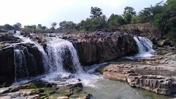

Pochera Waterfalls
Pochera Waterfalls is one of the most beautiful waterfalls located near Adilabad, Telangana.
Location: Adilabad, Telangana, India
Ticket Price: Free entry
Transportation: Accessible by road, about 37 km from Adilabad town.
Pochera Waterfalls is one of the most beautiful waterfalls located near Adilabad, Telangana.
Location: Adilabad, Telangana, India
Ticket Price: Free entry
Transportation: Accessible by road, about 37 km from Adilabad town.